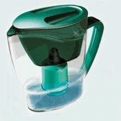

Про жизнь на дереве
Обещал рассказать про рытьё. Но решил сначала написать о том, что сильно облегчило нашу жизнь. И о том, на что следует обращать особое внимание тем, кто решит повторить наш «подвиг» переселения на землю.
Если постоянно испытываешь неудобство, выполняя простые ежедневные вещи, да ещё в условиях постоянного тяжёлого физического труда, то жизнь быстро перестаёт радовать. Понимая это, мы как могли налаживали свой быт.
Быт
Пока я занимался тяжёлым физическим трудом, жена обустраивала быт. Меня очень удивляла моя реакция на каждое новое усовершенствование нашей жизни в диких условиях. Я радовался как ребёнок. Как ни ругай цивиллизацию, но прелести её прелестны. :)
Понятно, что самое главное — это хорошая палатка, два слоя сантиметрового пенофола под ней (чтоб помягче было) и спальник (у нас был двухместный, «Берлога»). Но это тот минимум, без которого вообще на природу соваться я бы не стал, так что считаю, что всё это у благоразумного читателя имеется.
 Первое, чего нам не хватало — это место для сушки вещей, и оно в избытке появилось в качестве верёвочных «перил» дома на дереве.
Первое, чего нам не хватало — это место для сушки вещей, и оно в избытке появилось в качестве верёвочных «перил» дома на дереве.
Второе — место под крышей вне палатки. Я уже писал как мы отлёживали бока, не имея такового. Конечно, крыша дома на дереве не защищала от дождя при сильном боковом ветре, но от палящего Солнца защищала ещё как! Про нас в роли морских котиков я тоже писал, там же.
Постоянно сидеть в палатке по любому поводу — угнетает. Плюс, постоянно тащишь в палатку грязь и песок, приходится её постоянно вытряхивать. С появлением «палубы» эта проблема практически отпала.
Кухня
Жену очень сильно порадовало появление места для хранения кухонных принадлежностей. На фото сверху видно, как всякие тазики, тарелки и кружки стоят с краю палубы. Стоят они не под крышей, и во время дождя посуда моется автоматически. Очень удобно.
Подпалубное пространство было неплохим бонусом к палубе: там хранились инструменты и прочий хлам, который желательно было защитить от дождя, но которому на палубе место не нашлось. В балки палубы мы закрутили саморезы и вешали на них всё подряд. На фотке видны несколько пакетов, висящих под палубой.
 Продукты мы хранили в таких баках. Сначала был куплен тот, который справа. Думали, что закручивающаяся крышка надёжнее. Нифига подобного, она очень неудобно и долго закручивается и чаще всего мы захлопывали её ударом кулака. Тот бак, который слева оказался гораздо удобнее в эксплуатации. Он с удобной крышкой и с ручками, больше по объёму, да ещё и стоил дешевле.
Продукты мы хранили в таких баках. Сначала был куплен тот, который справа. Думали, что закручивающаяся крышка надёжнее. Нифига подобного, она очень неудобно и долго закручивается и чаще всего мы захлопывали её ударом кулака. Тот бак, который слева оказался гораздо удобнее в эксплуатации. Он с удобной крышкой и с ручками, больше по объёму, да ещё и стоил дешевле.
Бак справа вкопан в землю неспроста. Это был наш «холодильник». Не минусовая температура в нём, но достаточно чтобы продукты хранились подольше. Т.к. он был менее удобен, в нём хранились продукты редкого использования и запасы круп. Левый же использовался постоянно. В нём лежали вскрытые пакеты с крупами, приправы и всякие вкусняшки к чаю.
 Кстати, о чае. Для чайных принадлежностей и вещей первой необходимости жена самостоятельно сколхозила вот такую полочку.
Кстати, о чае. Для чайных принадлежностей и вещей первой необходимости жена самостоятельно сколхозила вот такую полочку.
На этой же фотке виден термос, который не только экономит время и газ, но и в целом существенно повышает комфортность существования. У нас было правило, чтобы термос всегда был полон кипятка. И в случае резко налетевшей непогоды мы просто забирались в палатку с термосом и грелись чаем :)
 Готовили на портативной газовой плитке типо той, что справа. Работает на поллитровых газовых баллонах, которые довольно дёшевы. Крышка чемоданчика защищает огонь от ветра, удобно. Плитка достаточно компактна, так что её можно занести в палатку, что мы и делали, опять же во время непогоды. Погреться и согреть чайник в случае если термос всё-таки оказался пуст. :)
Готовили на портативной газовой плитке типо той, что справа. Работает на поллитровых газовых баллонах, которые довольно дёшевы. Крышка чемоданчика защищает огонь от ветра, удобно. Плитка достаточно компактна, так что её можно занести в палатку, что мы и делали, опять же во время непогоды. Погреться и согреть чайник в случае если термос всё-таки оказался пуст. :)
 Но газ имеет свойство кончаться, и крышка чемодана спасает лишь от лёгкого ветра. В такие моменты нас выручала сложенная мной мини-печь. Я уже писал, что сложил тестовую ракетную печь из 10 кирпичей (фотки, к сожалению не сохранилось).
Но газ имеет свойство кончаться, и крышка чемодана спасает лишь от лёгкого ветра. В такие моменты нас выручала сложенная мной мини-печь. Я уже писал, что сложил тестовую ракетную печь из 10 кирпичей (фотки, к сожалению не сохранилось).
Печь на фото — не ракетная, обычная. Сложил такую чтобы сравнить эффективность разных печей. Оказалась хуже ракетной, но так и прослужила нам до переселения в дом. Сложена без всякого раствора, все щели довольно быстро забились сажей.
Вода
Запасы питьевой воды мы хранили в 50-литровом пластиковом баке. Её чаще всего нам привозил отец. Но иногда мы ходили пополнять запасы к соседям. Чаще это были соседи ближайшие (Ванька с Илонкой), которым наличие машины позволяло ездить на родник. Но иногда приходилось и за полтора километра ходить к дальним соседям (Роме с Машей), у которых помпа появилась раньше всех.
Но иногда нам было лень куда-то ходить и мы процеживали дождевую воду через фильтр типа того что на фото справа.
{kind=link}
Я уже упоминал про окопы, имеющиеся в изобилии вокруг. Таковой имеется и у нас на участке (я ещё через него мостик делать собирался, там же). Этот окоп мы застелили огромным куском полиэтилена и таким нехитрым образом собирали дождевую воду. Но полиэтилену мы не доверяли и собранную воду перетаскивали в две 250-литровые чугунные ванны. Не доверяли потому, что полиэтилен в любой момент мог быть повреждён когтями и зубами зверей.
Звери
Ну и какое хозяйство без животины? Как говорится, их есть у нас.

Я уже упоминал про двух кошек с которыми мы переселились на землю. Манька и Пумка (мама и дочка соответственно). Уже говорил, что Манька через неделю дикой жизни куда-то пропала. Было очень жаль, мы её очень любили.
После пропажи мы были в лёгком трансе. Пумчик (так мы называли Пумку) как могла пыталась веселить нас своими проказами.
Кстати, Пумка была одним из шести Манькиных котят. Троих мы раздали в добрые руки, двое скрылись в неизвестном направлении буквально за день до переезда на землю. Если б не скрылись — у нас было бы четыре кошки. Но получилось что скрылись. И Манька скрылась.

Пумка была самая дикая и неручная из приплода. Но когда пропали две последние её сестрички, она очень изменилась. Видимо, скучала по ним. Но это не мешало ей продолжать быть дикой, и она демонстрировала это периодическими «подарками», которые мы обнаруживали в палатке.
Однажды мы залезли в палатку, а она полная перьев. И в спальнике трупик птички. Пумчик так демонстрирует нам, что очень нас любит. С пропажей Маньки она стала совсем ручной.

Ведь осталась одна оденёшенька... Пока в городе, на ВДНХ, нам не предложили купить за 5 рублей собаку дворянской породы.
Собаку назвали Тризором. Сразу прочитали как надо дрессировать и воспитывать. Чем и занимались в свободное от работы время. Поначалу это не особо помогало, но потом сказалось сторицей.
Со вторым зверем стало гораздо веселей. Тризор с Пумкой подружились почти сразу, и потом даже кушали долгое время из одной миски. Ну и игрались соответственно. Особенно они любили игру «Получи мохнатой лапой по мордасам». Нам с Катей она тоже очень нравилась, мы с упоением наблюдали за этим процессом. :)
Таким вот весёлым семейством мы жили и строились. Точнее, пока не строились, а копали котлован...